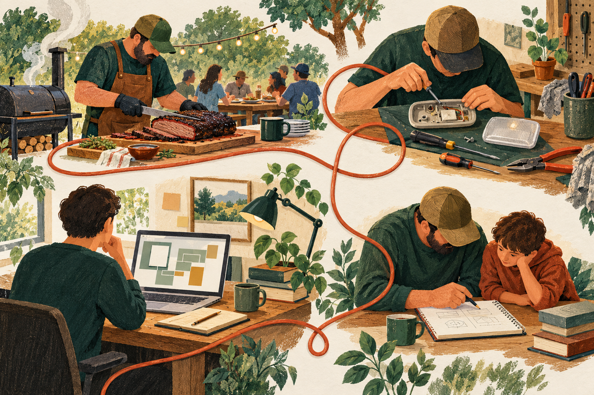

A / Finding a beginning
Start where you are.
A small, approachable entry into a bigger landscape. Best beside the shared-principles or adult-learning panel.
MASTHEAD / CREATIVE REVIEW
A review space, separate from the live site
Real artifacts establish the work. A few thoughtful illustrations explain the ideas. A short conversation helps someone picture their own beginning.
Try the endpoint concept ↓01 / Editorial directions
Illustrative concepts, not photographs of Todd or evidence of real events.
A / Finding a beginning
A small, approachable entry into a bigger landscape. Best beside the shared-principles or adult-learning panel.
B / Human judgment
Capability moves quickly. A person pays attention, chooses a direction, and corrects it. Best beside judgment and machine time.

C / The same curiosity
One thread connects everyday learning, substantial building, and helping someone else begin. This is the most personal of the three metaphors.
02 / Small interactions with a purpose
A screenshot, a team photograph, a page of actual work. “Why this matters” opens a short explanation; the deeper artifact stays one tap away.
A small invitation to name something that gets in the way. It demonstrates the friction-recognition habit while giving the visitor something useful.
The endpoint below turns reading about Todd into a short reflection on the visitor’s own situation. A conversation remains optional.
03 / Are You Ready
Clickable local concept · no AI call, submission, analytics, or saved answers
Let’s find a useful next step.
Five short questions about your situation. This explores possible starting points; it does not assess your competence or certify readiness.
Try a different route to see how the recommendation changes. Answers stay in this page and disappear when you reload.
A starting point, not a score
A short summary of what you’re exploring and a possible place to start.
The live version could let you open an email draft or request a conversation, with your brief included only if you choose. This prototype sends nothing.